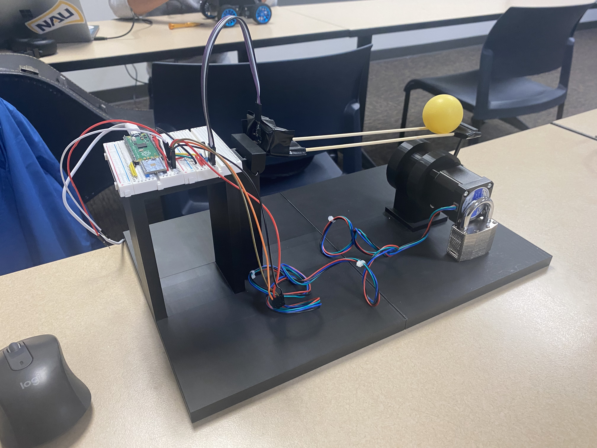

Overview and details about Robot 2.

Ball-on-Beam Dynamic Balancing Prototype
Robot 2 is a Ball-on-Beam dynamic balancing prototype developed as an educational control-system demonstrator. The system uses an ultrasonic distance sensor to measure the ball position along the beam, a NEMA 17 stepper motor to tilt the beam, and a PID controller running on a Raspberry Pi Pico to stabilize the ball around a target position.
This prototype was built to answer key questions about sensor latency, actuator torque requirements, and PID tuning for an unstable system. It also serves as a stepping stone for next semester’s Ball-on-Plate robot by validating the core sensing and actuation approach in a simpler one-dimensional setup. The mechanical design includes a 3D-printed base, hinge, beam supports, and couplers that interface the stepper shaft to the beam.
Educationally, Robot 2 allows K–12 students to see how changing controller parameters affects system behavior in real time. By watching the ball move and settle on the beam, students gain an intuitive understanding of feedback, stability, and the tradeoffs between response speed and overshoot.